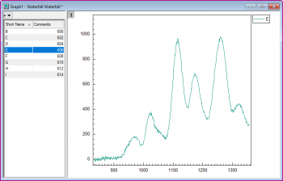
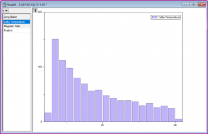
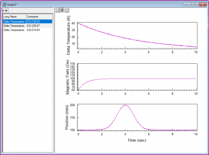
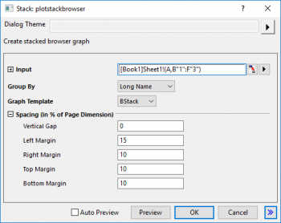

|
|
|
|  |  |
|
|
|
|
 |
Wählen Sie mindestens eine Y-Datenspalte (oder einen Bereich aus mindestens einer Spalte) aus. Wenn es eine verbundene X-Spalte gibt, stellt die X-Spalte die X-Werte bereit; ansonsten wird ein Abtastintervall der Y-Spalte oder Zeilennummer verwendet.
Wählen Sie die gewünschten Daten aus.
Wählen Sie im Menü .
Wenn Sie Zeichnen > Browser: Gestapelt ... wählen, um ein gestapeltes Browserdiagramm zu zeichnen, wird ein Dialog "Stack:plotstackbrowser" aufgerufen:

Diese X-Funktion entspricht der X-Funktion plotstack. In diesem Dialog:
BBLINE.OTP; BCLine.OTP; BHISTO.OTPU; BSLine.otpu; BStack.otpu (installiert im Origin-Programmordner).
Das Browserdiagramm "Gestapelte Linien" zeichnet alle ausgewählten Spalten als gestapelte Linien mit festgelegtem Y-Versatz. Standardmäßig wird der Versatz auf Auto und der Abstand (%) auf 8 auf der Registerkarte Stapeln im Dialog Details Zeichnung gesetzt. Jede angezeigte Kurve wird mit dem gleichen Versatzabstand von der zuvor angezeigten Kurve gestapelt.
Hinweis: Beim Browserdiagramm mit schwarzen oder farbigen Linien können Sie auf die Schaltfläche mit dem nach unten weisenden Pfeil klicken, um im Kontextmenü Linien mit Y-Versatz auszuwählen und die Linien in gestapelte Linien und auch umgekehrt umzuwandeln.
Die Vorlage BStack kann benutzerdefiniert angepasst und im Anwenderdateiordner gespeichert werden. Außerdem kann sie im Auswahlmenü Diagrammvorlage von plotstackbrowser aufgeführt werden, indem Sie Folgendes tun:
page.tkey$=GBStack
Ausführlichere Informationen lesen Sie auf der Seite "Diagramm mit Browserfeld".